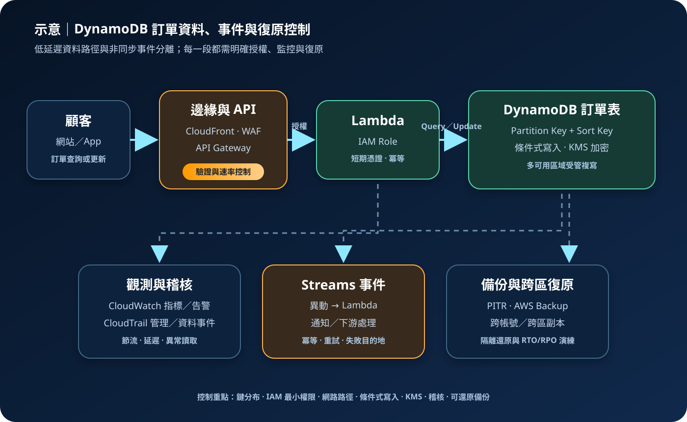

Amazon DynamoDB：無伺服器 NoSQL 與資料建模
Amazon DynamoDB 是全受管、無伺服器的鍵值與文件資料庫，提供低延遲存取、自動擴展及多種復原能力。它減少伺服器與資料庫引擎維運，但資料模型、分割鍵、存取模式、權限與成本仍必須由架構設計明確控制。
作者：Dr. William｜查閱與發布：2026-09-02
服務定位
DynamoDB 適合以已知鍵值及可預測存取模式處理大量、低延遲資料。AWS 管理底層硬體、資料複寫、軟體修補與服務擴展；應用透過 Table、Item 與 Attribute 儲存資料，不需配置資料庫伺服器。資料表可選隨需或佈建容量模式，並搭配次要索引、交易、DynamoDB Streams、存留時間（TTL）、時間點復原與 Global Tables。
DynamoDB 不是關聯式資料庫的直接替代品。需要任意 JOIN、複雜臨時查詢、跨大量資料列分析或高度依賴關聯完整性的工作負載，通常更適合 RDS、Aurora、Redshift 或分析服務。採用前應先把業務查詢轉換成明確的存取模式，再設計鍵與索引。
核心概念
資料與索引
- Table／Item／Attribute：資料表包含項目，每個項目由屬性組成；除主鍵外不要求固定結構。
- Partition Key：經雜湊決定資料配置位置；高基數且分布均勻可降低熱分割風險。
- Sort Key：與分割鍵組成複合主鍵，讓同一分割鍵下的項目依值排序並支援範圍查詢。
- GSI／LSI：全域與區域次要索引提供替代查詢鍵，但會增加儲存、寫入成本與一致性限制。
- 單表設計：可把多種實體依存取模式放入同一資料表，不是所有系統都必須採用。
讀寫與生命週期
- 容量模式：On-demand 依實際請求計費；Provisioned 先設定讀寫容量並可搭配 Auto Scaling。
- 一致性：資料表與 LSI 讀取可選最終一致或強一致；GSI 與 Streams 僅提供最終一致讀取。
- 條件式寫入與交易：Condition Expression 防止非預期覆寫；交易可對多個項目提供 all-or-nothing 操作。
- Streams：保留資料異動的時間序列紀錄，可觸發 Lambda 處理下游工作。
- TTL：以項目時間戳記標示過期，系統非同步刪除；不能作為精確排程或即時授權失效機制。
適合與不適合的使用情境
適合
- 購物車、工作階段、裝置狀態、遊戲狀態或使用者設定等依主鍵快速存取的資料。
- 流量快速變動、需要自動擴展且不希望管理資料庫主機的 API 後端。
- 事件驅動架構中，以 Streams 捕捉異動並交由 Lambda 執行非同步處理。
- 需要多區域主動寫入，且應用已定義衝突語意、資料駐留與復原程序的 Global Tables 工作負載。
不適合或不能單獨完成
- 查詢條件持續變動、依賴多表 JOIN、複雜聚合或臨時報表的關聯式與分析需求。
- 每個項目可能超過 DynamoDB 項目大小限制，且無法把大型內容移至 S3 並只保存參照。
- 把 Scan 當成主要線上查詢方式；全表掃描會消耗容量、增加延遲，並可能與關鍵交易競爭資源。
- 以 TTL 取代立即刪除、授權撤銷或法規要求的精確銷毀流程，因過期項目會非同步移除。
示意故事案例：訂單狀態查詢與事件處理
以下為架構示意，不代表特定組織或正式部署。一個零售平台讓顧客透過 CloudFront、AWS WAF 與 API Gateway 查詢訂單。Lambda 使用受限 IAM Role 與短期憑證，依 Tenant ID 與 Order ID 組成的鍵讀寫 DynamoDB；條件式寫入避免兩個流程同時覆寫狀態。DynamoDB Streams 觸發另一個 Lambda 發送受控通知。資料表使用 AWS KMS 加密、時間點復原及跨區備份；CloudTrail 記錄控制平面與適用的資料事件，CloudWatch 監控錯誤、延遲與節流。外部服務的機密只存於 Secrets Manager 或 Parameter Store，不進入資料表鍵值、程式碼或日誌。

建置與運作流程
- 盤點存取模式：列出每個讀寫操作的鍵、排序、資料量、尖峰流量、一致性、延遲、資料保留、RTO/RPO 與區域限制。
- 設計主鍵：選擇高基數且分布均勻的 Partition Key，必要時加入 Sort Key；避免日期、單一租戶或固定狀態造成集中流量。
- 建立資料表與索引：只為明確查詢建立 GSI／LSI，估算索引投影、寫入放大、儲存與回填影響；大型物件放入 S3，表內保存受控參照。
- 選擇容量模式：未知或波動流量可先評估 On-demand；穩定且可預測流量可評估 Provisioned 與 Auto Scaling，並設定配額及成本告警。
- 建立存取控制：工作負載使用 IAM Role、最小權限與短期憑證；管理人員啟用 MFA。可依表、索引、動作及 LeadingKeys 等條件縮小權限。
- 保護資料：依政策選擇 AWS owned key、AWS managed key 或 customer managed key；限制 KMS Key Policy。敏感欄位若需應用層加密，必須另外設計金鑰與查詢方式。
- 實作安全寫入：使用 Condition Expression、版本屬性或交易處理競爭更新；Streams 消費者使用冪等鍵、重試、失敗目的地及可觀測性。
- 設定觀測與稽核：CloudWatch 監控延遲、系統錯誤、節流、容量、Streams IteratorAge 與異常流量；CloudTrail 記錄資源變更及風險所需的資料事件。
- 建立復原能力：啟用時間點復原，安排按需或 AWS Backup 備份與跨帳號／跨區副本；定期還原到隔離環境，驗證 KMS、IAM、相依服務及 RTO/RPO。
- 負載與故障測試：以接近實際的鍵分布測試尖峰、熱鍵、GSI、交易、重試與下游故障；確認退避與重試不會形成重試風暴。
成本與可用性考量
DynamoDB 成本依選定模式與功能可能包含讀寫請求或容量、資料儲存、GSI 儲存與讀寫、備份、時間點復原、Streams 讀取、資料匯入／匯出、Global Tables 跨區複寫與資料傳輸。交易讀寫會使用不同的容量計算；強一致讀取通常比同等大小的最終一致讀取消耗更多。實際價格、免費額度、區域差異及保留方案應以查閱時的官方定價為準。
按鍵查詢通常比 Scan 更有效率。過大的項目、回傳不必要屬性、過多 GSI、低效率 Filter Expression 及無界重試都可能增加成本。Filter Expression 在讀取後才過濾，不能消除已消耗的讀取容量；應優先以 Key Condition 縮小資料範圍。
DynamoDB 會在單一 AWS 區域內跨多個可用區域複寫資料，但區域級中斷、錯誤刪除、錯誤程式與被授權的惡意操作仍需另外處理。時間點復原保護特定時間範圍內的表狀態；Global Tables 提供多區域複寫，不等同不可變備份。跨區方案需測試衝突處理、故障切換、KMS、IAM、應用端點與資料一致性。
特有資安風險與控制
- 過度寬鬆的資料平面權限：允許萬用表與所有讀寫動作可能造成跨租戶存取。依表、索引與必要動作授權，使用 IAM 條件限制 LeadingKeys，並以不同角色分隔讀、寫、管理與備份。
- 鍵設計造成熱分割與阻斷：少數鍵承受大量請求會提高延遲、節流與成本。使用高基數鍵、適當寫入分片及負載測試，對異常租戶實施配額與速率限制。
- 非預期全表掃描：錯誤 Scan 可消耗大量容量並暴露過多資料。正式角色限制 Scan，優先使用 Query，對資料匯出使用隔離流程並監控突增讀取。
- 條件競爭與重播：無條件 PutItem 或 UpdateItem 可能覆寫新狀態；重試可能重複扣款或發送通知。使用條件式寫入、交易、版本欄位、冪等鍵與指數退避。
- Streams 下游擴散：異動紀錄可能把敏感屬性傳至 Lambda、日誌或第三方。最小化資料內容、限制 Stream 與 Lambda 權限，對失敗紀錄與目的地加密並設定保留及刪除。
- TTL 被誤認為即時刪除：過期項目可能在一段時間後才移除，期間仍可能被讀取。授權與應用查詢要同步判斷到期時間；要求立即移除時執行明確刪除並留下稽核證據。
- 備份與匯出副本失控：備份、PITR 還原表或 S3 匯出可能繞過原本應用層限制。使用跨帳號備份保存庫、最小權限、KMS 加密、Vault Lock 適用性評估及還原環境網路隔離。
- 公網路徑與資料外洩：DynamoDB API 可透過公開服務端點連線；工作負載不應因此暴露於公有子網。使用 VPC Gateway Endpoint、Endpoint Policy、安全路由與出口控制，並驗證 DNS 與流量路徑。
- 機密與敏感值落入資料：不得把 credential、Access Key、Secret Key、Token、密碼或 cookie 值寫入資料表鍵、Streams、錯誤訊息或日誌。應用機密存於 Secrets Manager 或 Parameter Store，必要資料採欄位最小化與應用層加密。
- 稽核涵蓋不足：只記錄控制平面不能回答敏感項目由誰讀取。依風險啟用 CloudTrail 資料事件、集中與保護軌跡，搭配 CloudWatch 告警及成本異常偵測。
共同責任邊界
AWS 負責 DynamoDB 服務的實體設施、底層主機、受管資料庫軟體、修補及區域內服務基礎設施。客戶負責資料分類、存取模式、主鍵與索引、IAM 最小權限、MFA 與短期憑證、應用授權、VPC Endpoint 與網路隔離、公開端點使用決策、KMS 金鑰政策、Secrets Manager/Parameter Store、CloudTrail/CloudWatch、備份、跨區復原、資料保留與刪除。服務自動擴展及多可用區域設計不會自動防止越權查詢、錯誤資料模型、邏輯刪除或應用程式缺陷。
上線前可執行檢查清單
- □ 所有讀寫、排序、範圍、一致性、尖峰量與 RTO/RPO 已整理為可測試的存取模式。
- □ Partition Key 高基數且流量分布經實測；Sort Key、GSI 與 LSI 只支援已確認的查詢。
- □ 線上路徑不依賴無界 Scan；Filter Expression 的容量成本與回傳分頁已驗證。
- □ 工作負載採 IAM Role、短期憑證與最小權限，管理身分啟用 MFA，跨租戶鍵條件已測試。
- □ Lambda 或運算資源位於適當私有網路層，DynamoDB VPC Endpoint、Endpoint Policy、路由與出口控制已驗證。
- □ KMS 加密與 Key Policy 符合資料分類；外部服務機密只存於 Secrets Manager 或 Parameter Store。
- □ 條件式寫入、交易、冪等、逾時、指數退避與最大重試次數已在競爭和故障情境測試。
- □ CloudWatch 已對延遲、錯誤、節流、容量、Streams IteratorAge 與成本異常設定告警。
- □ CloudTrail 管理事件及風險所需的資料事件已集中保存、限制讀取並以 KMS 保護。
- □ PITR、AWS Backup 或按需備份與跨區／跨帳號策略已啟用，並完成隔離還原演練。
- □ Global Tables 如有使用，衝突語意、區域切換、資料駐留、複寫成本與 KMS 相依已測試。
- □ 資料表、Streams、匯出、日誌與程式碼中不含 credential、Access Key、Secret Key、Token、密碼或 cookie 值。
AWS 官方一手來源
- Amazon DynamoDB Developer Guide｜What is Amazon DynamoDB?（查閱：2026-09-02）
- DynamoDB core components（查閱：2026-09-02）
- DynamoDB read consistency（查閱：2026-09-02）
- DynamoDB partitions and data distribution（查閱：2026-09-02）
- On-demand backup and restore for DynamoDB（查閱：2026-09-02）
- Point-in-time recovery for DynamoDB（查閱：2026-09-02）
- Security in Amazon DynamoDB（查閱：2026-09-02）
- Using Amazon VPC endpoints to access DynamoDB（查閱：2026-09-02）
- Cost optimization for DynamoDB（查閱：2026-09-02）
- Amazon DynamoDB pricing（查閱：2026-09-02）
- AWS Shared Responsibility Model（查閱：2026-09-02）
內容說明
本文依查閱日可用的 AWS 官方文件整理，作為基礎學習與架構討論材料；實際部署仍須依區域支援、最新價格與配額、工作負載測試、組織政策、法規及風險評估調整。